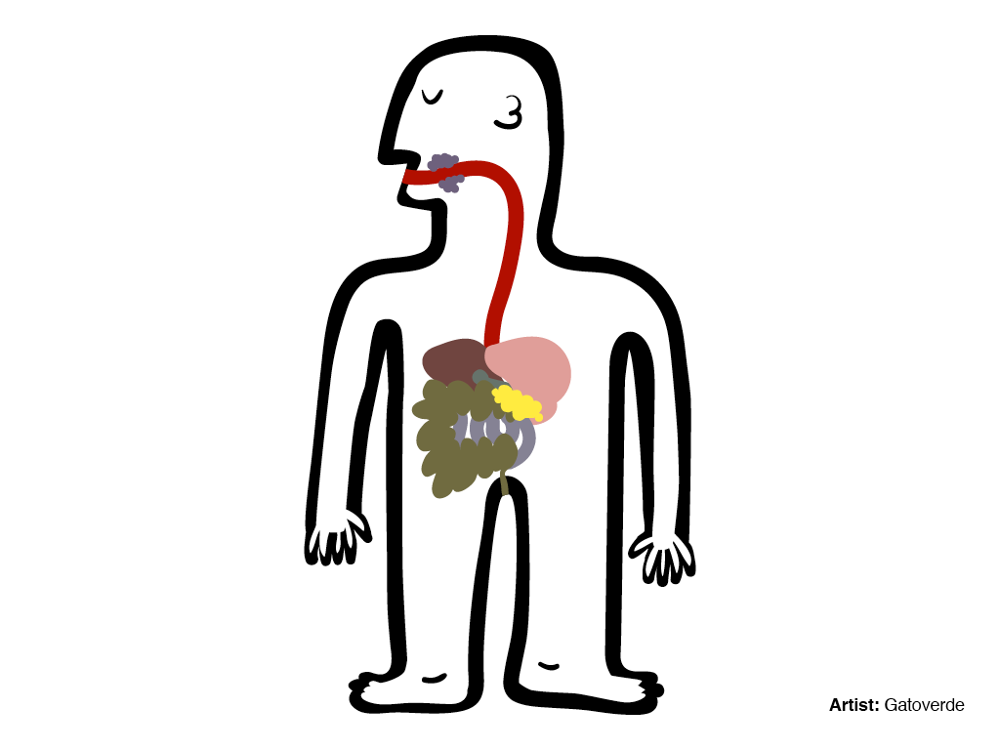

Anatomy of a Web Map
Housekeeping!
You can follow along here:
sta.mn/qhg. Links are in blue boxes,
green is just emphasis. You can comment and edit on
github!Now let's get started :)
Today we will be talking about the simplest, most generic web map. But we will note exceptions.
(There are always exceptions!)
This will be a complete open source stack.
We'll talk a lot about Google, but we're going to show you a 100% Google-free stack
But first, what does anatomy have to do with a web map?
Well,
Both bodies and web maps have components and systems that interact and intertwine.

Instead of cells, maps have data.
Instead of circulatory and digestive systems, web maps have styles and tiles and servers.
oh my!
So,
What is a web map?
To answer that question, maybe it's more helpful to ask,
How is a web map different than a digital map?
Digital: involves a computer, but might not be accessible by the internet.
A web map is a kind of digital map. And both are obviously quite different from analog maps, such as paper maps and atlases!
We're talking about web maps that you view in a browser, like...
Making maps for mobile devices can be similar, but we're not talking about that today.
We're also not talking about digital globes like Google Earth.
ok ok
but how about a little history:
How did web maps come to be?
First, there were digital maps like
ArcGIS.
Although useful, ArcGIS for the Web is not user friendly :(
Also usually ugly
(though the one we just showed was not too bad)
In 1996, Mapquest launched its web service.

ta da!
Directions! Revolutionary!
The problem: it was slow to load :(
MapQuest required a full page refresh to scroll or zoom, and was always aligned to tile boundaries.
Google Maps really paved the way for online mapping, beginning in 2005.
Invention of the
tile 
All web maps use the same tile boundaries:

Load the ones that are in your screen, then if the map is “smart,” it will pre-load tiles outside of the screen (top, bottom, left, right)
This kind of map is colloquially called a slippy map
Google maps uses mercator projection, which is designed for sailors BUT it works well for flat maps
And all other slippy maps and slippy map software followed Google's lead
Now we're ready to show you the whole anatomy!
[code: show the simplest possible leaflet map]
[diagram] HTML page, with a JavaScript map library, which loads tiles from a server, and a content layer from another server
What does the javascript library do? Grabs the tiles, adds content layer, handles interaction.
Tiles: the base of a base map
[is this where we talk about rasters vs vectors, and points/lines/polygons?]
[copy and paste Lyzi slides about tiles through pt 2 talking about feature layers]
https://mts0.google.com/vt/lyrs=m@245167685&hl=en&src=app&x=1310&y=3166&z=13&s=
https://a.tiles.mapbox.com/v3/financialtimes.map-w7l4lfi8/13/1310/3166.png
http://d.tile.stamen.com/watercolor/13/1310/3166.jpg
Tiles are rendered in advance (usually) then stored in a cache
[Include diagram of the database, the cache, the renderer] (usually
mapnik)
Tiles could be a road map, a satellite image, or anything else that's a raster! [Example images]
Content layers
point, line, polygon
interactivity:
There’s a limit to how much data you can have in your content layer, because it will take more time to load. Above a certain size, vectors actually become too much data to load at a certain speed.
Filetypes: GIS uses shapefiles, but web maps prefer KML, or more recently, GeoJSON
Content layers could also be made from transparent tiles
3 exceptions to the simplified story!
Exception #1: Tiles are always rasters EXCEPT when they're not!
vector tiles! What are they?
vector tiles: they are an alternative to a database that makes raster tiles. Still smush into PNG
“what is difference b/t raster and vector tiles?” // put questions into the presentation.
Raster: ask for data to fit into tile
Vector: already have vector data sliced up in the way that I will make raster tiles
So someone has to go through and chop up that data, like MapBox
Exception #2: Can’t interact with features on a raster. BUT
UTFGrid (mapbox invention) makes it possible.

UTFGrid is an invisble tile layer made up of arbitrary letters which are indexes into the clickable data
Exception #3:
D3 exists outside the world of tiles
you can’t easily make road map in D3 BUT can do things that are clumsy in slippy maps like...

different map projections (in the browser!)
sta.mn/jfs
D3

IS

IN

SANE
Very powerful, but steep learning curve
So.
Where do I start?
I want to make…
[Do we want to make something like this?]// http://mapmeld.github.io/whichmapdoiuse/#
Do I need my own tiles?
No:
Use these! [list of examples, OSM styles, CloudMade, Stamen, MapBox, MapQuest]
Yes:
TileMill
Will generate a pile of tiles [screenshot]. Saves them as
MBTiles.
Open up this file with
mbutil, and look at all the files! Or...
...or host them on MapBox
Do I need a content layer?
No:
Put all your data into the tiles. Possibly use UTFGrid for interactivity
Yes:
Convert a Shapefile to GeoJSON with
OGRE or write your own GeoJSON with
geojson.ioAlso mention CartoDB
Thanks to:
You!
Presentation made with
big


 choropleth maps or... sta.mn/jyx
choropleth maps or... sta.mn/jyx cartograms or... sta.mn/q99
cartograms or... sta.mn/q99